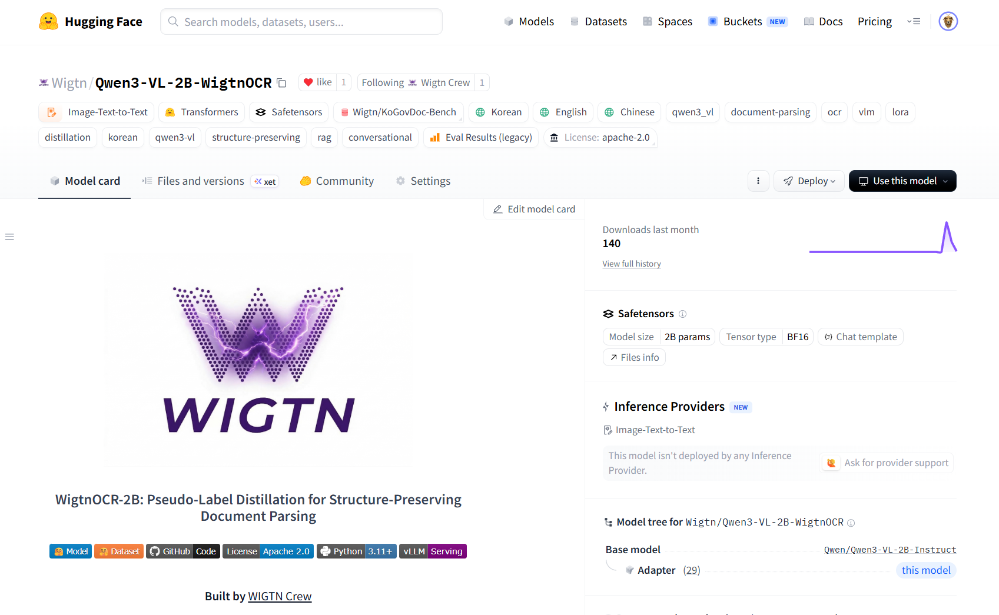
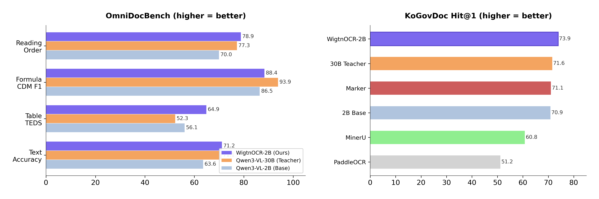
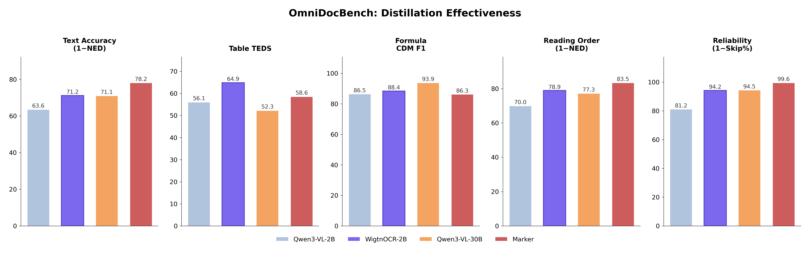
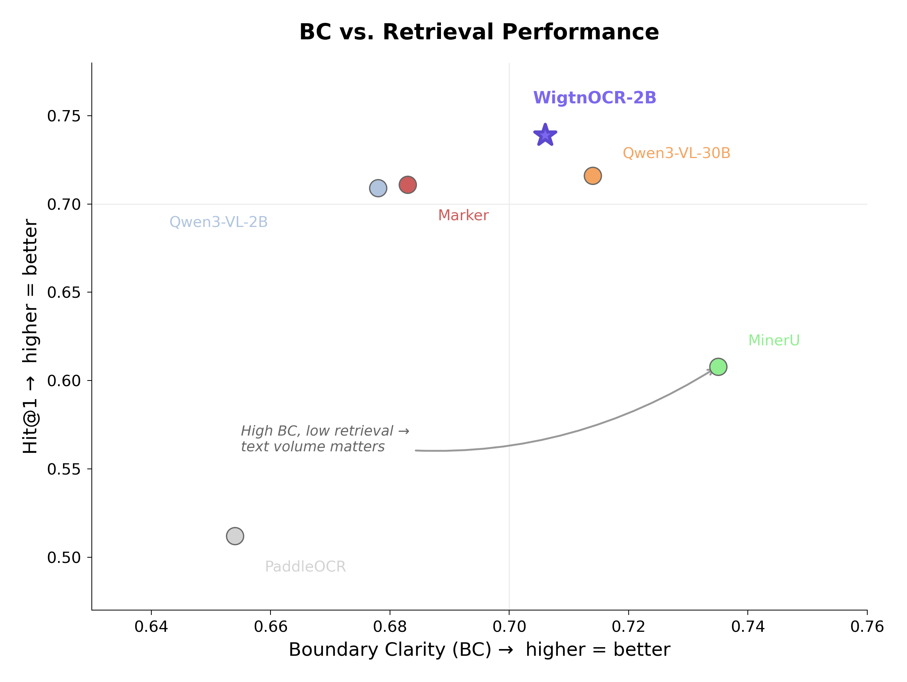
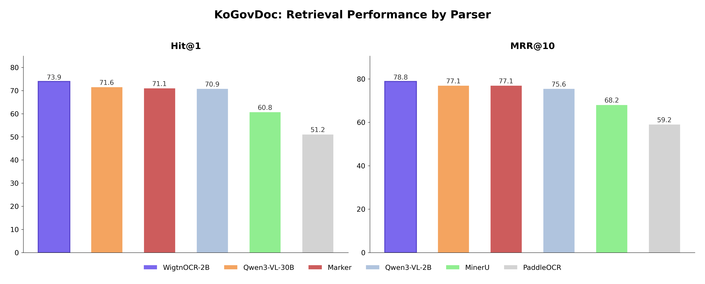

WigtnOCR - VLM 기반 한국 공공기관 문서 전용 파싱 프레임워크
Overview
VLM 기반 한국 공공기관 문서 전용 파싱 프레임워크
SoundMind Inc.에서 B2B2G(정부 대상 간접 납품) RAG 서비스를 개발하며 직면한 문제에서 출발한 연구 프로젝트입니다. End User가 어떤 구조의 문서를 활용하는지 사전에 알 수 없는 B2B2G 환경에서, 한국 정부 공공문서라는 도메인만은 확정되어 있었기 때문에, 한국 정부 공공문서를 정확하게 읽고 구조화하여 저장할 수 있으며 실무 인프라 여건(제한된 GPU, 비용)에 충족되는 SLM 기반 Document Parser를 만드는 것이 목표였습니다.
"큰 모델이 좋다"는 단계를 넘어, LLM의 지능을 SLM으로 어떻게 효율적으로 전이할 것인가가 현재 AI 엔지니어링의 핵심 화두입니다. Orca(Microsoft, 2023)가 제시한 지식 증류(Knowledge Distillation) 패러다임 — LLM의 추론 과정을 SLM에 학습시켜 소형 모델로 대형 모델 수준의 성능을 달성하는 접근 — 을 한국 공공문서 파싱이라는 도메인에 적용했습니다.
Qwen3-VL-2B-Instruct를 한국 공공문서 2,667장으로 LoRA fine-tuning한 결과, 15배 큰 Teacher 모델(30B)과 동등하거나 초과하는 파싱 성능을 달성했으며, 6개 파서 비교에서 Retrieval 성능 1위를 기록하여 "구조화 파싱 → 청킹 품질 개선 → 검색 성능 향상"의 end-to-end 인과 관계를 검증했습니다. 모델 가중치·학습 데이터·평가 코드를 전부 오픈소스로 공개했습니다.
배포: HuggingFace Model · HuggingFace Dataset · GitHub · WIGTN Crew
주요 성과
- 2B 모델로 15배 큰 30B Teacher 성능 초과 — 4/5 카테고리 매칭 또는 초과
- OmniDocBench Table TEDS — 1위 (0.649)
- 6개 파서 비교 Retrieval — Hit@1, MRR@10 최고 성능
- LoRA Fine-tuning 학습 시간 — 31분 (DeepSpeed ZeRO-2)
- 오픈소스 공개 — HuggingFace Model + Dataset + GitHub
연구 질문
"30B Teacher의 파싱 능력을 2B Student로 압축하면서 한국 공공문서에 특화된 성능을 달성할 수 있는가? 그리고 구조화된 파싱이 실제 RAG 파이프라인의 청킹·검색 품질로 이어지는가?"

기술적 문제 — 왜 기존 파서로는 안 되는가
순수 OCR의 한계
PaddleOCR 같은 전통적 OCR은 텍스트 인식은 하지만 문서 구조를 이해하지 못합니다. 실제 평가에서 WigtnOCR 대비 3~30배 적은 텍스트만 추출했으며, 한국 공공문서의 표·양식·복잡 레이아웃을 대부분 놓쳤습니다.
Rule-based 파서의 한계
PyMuPDF4LLM 같은 rule-based 파서는 텍스트 추출은 빠르지만 구조 인식률이 0%에 가까워, 법령의 조/항/목 계층이나 표+다이어그램+텍스트 혼합 레이아웃을 전혀 보존하지 못했습니다.
최신 VLM 파서의 한계
dots.ocr(RedNote), olmOCR(AI2) 같은 최신 VLM 기반 파서들은 영어·중국어 중심으로 학습되어 한국 정부 문서(복잡한 표·양식·도장, 스캔 문서 혼재, 다단 레이아웃)에 최적화되지 않았습니다.
30B 모델의 실무 한계
30B급 VLM은 파싱 품질이 우수하지만 듀얼 GPU가 필요하고 추론이 느려 실무 배포가 어렵습니다. 2B 모델이면 단일 GPU에서 빠르게 서빙 가능하고 Edge 배포도 현실적입니다.
Contribution Stack (3계층)
Layer 1 — Benchmark
KoGovDoc-Bench: 한국 정부 문서 평가셋 (val 294장, pseudo-GT 기반)
Layer 2 — Fine-tuned Model
Wigtn/Qwen3-VL-2B-WigtnOCR: LoRA domain-adaptive fine-tuning 가중치 (HuggingFace 공개)
Layer 3 — Framework
wigtnocr: pip install 가능한 OSS 라이브러리 (파싱→구조화 마크다운→청킹 통합 파이프라인)
Stage 1-3: Pseudo-GT 생성 → 검증 → 정제
Pseudo-GT 생성
PDF 페이지 이미지를 Qwen3-VL-30B-Instruct(Teacher)에 입력하여 구조화된 마크다운을 생성. KoGovDoc 10개 문서 3,637페이지 + arXiv 39개 논문 864페이지 = 총 4,501페이지 처리. 초기에 30B-Thinking 모델을 사용했으나 출력 불안정(think 태그 오염, 토큰 잘림)이 발생하여 Instruct 모델로 전환했습니다. Finding: document transcription에서는 reasoning 모델보다 instruction-tuned 모델이 안정적입니다.
GT 품질 검증
Qwen3.5-122B를 Judge로 사용하여 5점 척도 평가. "원본과 다른 부분"이 아니라 "출력물 자체가 학습 데이터로 쓸 만한 품질인가"를 판단하기 위해 이미지 없이 텍스트만으로 평가했습니다. 반복 루프, 텍스트 절단, 사고 과정 유출은 텍스트만 봐도 판별 가능합니다. KoGovDoc 합격률 75.1%, arXiv 73.8%. 3점 미만 페이지는 학습에서 제외했습니다.
데이터 정제
- kogov_008이 전체의 53%를 차지하는 편향 → max_doc_ratio=0.25로 제어
- 30B-Thinking 모델의 reasoning 잔여물(영어 사고 과정)이 GT에 섞인 오염 발견 → 20개 삭제, 257개 정리
- 최종 데이터: train 2,667개 + val 294개
Stage 4: LoRA Fine-tuning
Base Model: Qwen3-VL-2B-Instruct. LoRA rank=8, alpha=32, target=all-linear로 Language Model의 모든 linear layer에 어댑터를 부착했습니다. Vision Encoder와 Aligner는 동결했습니다 — 사전 예비 실험(pilot test)에서 VLM의 시각 인식 능력은 충분(Structure F1 79%)하지만 텍스트 생성 정확도가 부족함을 확인했기 때문입니다.
학습 설정
- Hardware: 2× NVIDIA RTX PRO 6000 Blackwell (96GB each)
- DeepSpeed ZeRO-2, 학습 시간 31분, final loss 0.075
Ablation Study
| Config | LoRA r | Epochs | Text NED↓ | TEDS↑ | TEDS-S↑ | CDM F1↑ | RO NED↓ | Skip%↓ | 판정 |
|---|---|---|---|---|---|---|---|---|---|
| v1 (최종) | 8 | 3 | 0.288 | 0.649 | 0.732 | 0.884 | 0.211 | 5.8% | Best overall |
| v2-best | 32 | 3 | 0.309 | 0.600 | 0.697 | — | 0.215 | 0.7% | 테이블 퇴보 |
| v2-last | 32 | 5 | 0.306 | 0.610 | 0.695 | 0.892 | 0.214 | 0.0% | 과적합 |
Finding
LoRA rank 8이 rank 32보다 우수했습니다 — rank를 올리면 수식은 소폭 개선되지만 테이블(-4.9pp)과 텍스트(+2.1pp)가 퇴보합니다. Epoch 5는 Val Loss 상승으로 과적합되었습니다. v2는 Skip Rate 0%를 달성하지만 핵심 파싱 품질이 희생되어 v1을 최종 모델로 확정했습니다.
Stage 5: OmniDocBench 평가
CVPR 2025에서 발표된 OmniDocBench(1,355 PDF 페이지, 사람이 만든 GT)로 4개 모델을 비교 평가했습니다.

성능 비교
| 모델 | Text NED↓ | Table TEDS↑ | TEDS-S↑ | CDM F1↑ | CDM Exp↑ | RO NED↓ | Skip%↓ |
|---|---|---|---|---|---|---|---|
| Qwen3-VL-30B (Teacher) | 0.289 | 0.523 | 0.657 | 0.939 | 0.692 | 0.227 | 5.5% |
| Qwen3-VL-2B (Base) | 0.364 | 0.561 | 0.667 | 0.865 | 0.504 | 0.300 | 18.8% |
| Marker (Rule-based) | 0.218 | 0.586 | 0.658 | 0.863 | 0.582 | 0.165 | 0.4% |
| WigtnOCR v1 (Ours) | 0.288 | 0.649 | 0.732 | 0.884 | 0.600 | 0.211 | 5.8% |
핵심 결과
- Text NED: 30B Teacher와 동등 (0.288 vs 0.289)
- Table TEDS: 전체 1위 — 0.649 (30B의 0.523 대비 +12.6pp)
- Reading Order: 30B Teacher 초과 (0.211 vs 0.227)
- Base 2B 대비 — Text NED 21%↑, Table TEDS 16%↑, Reading Order 30%↑
- Student가 30B Teacher를 4/5 카테고리에서 매칭 또는 초과 — pseudo-label distillation의 효과 입증
Stage 6: KoGovDoc Val 평가
학습에서 제외한 val 294장에 대해 페이지 전체 텍스트 기준 NED 평가를 수행했습니다.
결과
| Model | NED↓ | 평가 성공 | 에러 |
|---|---|---|---|
| WigtnOCR v1 | 0.285 | 289/294 | 5 |
| Qwen3-VL-30B (Teacher) | 0.334 | 294/294 | 0 |
| Qwen3-VL-2B (Base) | 0.390 | 294/294 | 0 |
핵심 결과
WigtnOCR가 30B Teacher를 한국 공공문서에서도 초과했습니다 (NED 0.285 vs 0.334).
Stage 7: BC/CS 청킹 품질 평가
"구조화 파싱이 실제로 더 좋은 청크를 만드는가?"를 검증했습니다. MoC(ACL 2025)의 BC/CS 메트릭으로 6개 파서를 비교했습니다. Semantic chunking(BGE-M3)을 핵심 비교 전략으로 사용했으며 — 두 파서 모두 동일한 방법으로 청킹하되, 입력 텍스트의 구조화 여부만 달라 공정 비교가 가능합니다.

KoGovDoc Semantic Chunking 결과 (6파서 비교)
| Model | BC↑ | CS↓ |
|---|---|---|
| MinerU | 0.735 | 2.711 |
| WigtnOCR-2B | 0.706 | 2.859 |
| Qwen3-VL-30B | 0.714 | 3.164 |
| Marker | 0.683 | 3.206 |
| Qwen3-VL-2B | 0.678 | 3.446 |
| PaddleOCR | 0.654 | 3.420 |
Engineering Challenges
- 초기 페이지 단위 청킹 → 대부분 청크 1개여서 BC/CS 계산 불가 → 문서 단위 합산으로 전환
- CS O(n²) 복잡도 → 대규모 문서(241청크, ~29,000쌍)에서 hang → MAX_CHUNKS_FOR_CS=50 균등 샘플링으로 해결
- WigtnOCR가 PaddleOCR 대비 3~30배 많은 텍스트를 추출 — 한국 공공문서의 표·양식·복잡 레이아웃을 순수 OCR이 놓치기 때문
Stage 8: Retrieval 평가 — End-to-End 검증
BC/CS가 좋다고 검색이 반드시 좋은 것은 아닙니다. Stage 8에서 최종 검색 성능을 측정하여 인과 체인을 완성했습니다. Semantic chunking → BGE-M3 벡터화 → FAISS 검색, 564개 쿼리를 평가했습니다.

Retrieval 결과 (6파서 비교)
| Model | Hit@1↑ | Hit@5↑ | MRR@10↑ | nDCG@10↑ |
|---|---|---|---|---|
| WigtnOCR-2B | 0.739 | 0.855 | 0.788 | 0.437 |
| Qwen3-VL-30B | 0.716 | 0.839 | 0.771 | 0.411 |
| Marker | 0.711 | 0.853 | 0.771 | 0.412 |
| Qwen3-VL-2B | 0.709 | 0.814 | 0.756 | 0.444 |
| MinerU | 0.608 | 0.789 | 0.682 | 0.384 |
| PaddleOCR | 0.512 | 0.693 | 0.592 | 0.293 |
핵심 발견
- WigtnOCR가 Hit@1(0.739), Hit@5(0.855), MRR@10(0.788)에서 전체 1위
- PaddleOCR 대비 Hit@1 +22.7pp, 30B Teacher 대비 +2.3pp
- MinerU는 BC/CS 1위이지만 Retrieval 5위 — 청크 경계 품질이 좋다고 검색이 좋은 건 아니며, 텍스트 풍부도와 구조적 충실도가 end-to-end RAG 성능에 더 중요
Practical Findings
- Thinking vs Instruct — Document transcription에서 reasoning 모델은 출력 불안정(think 태그 오염, 토큰 잘림), Instruct 모델이 안정적
- LoRA rank 최적점 — 데이터 2,667개 규모에서 r=8이 최적, r=32로 올리면 테이블 성능 퇴보 (-4.9pp)
- BC/CS ≠ Retrieval — BC/CS 청크 품질 메트릭이 Retrieval 성능을 예측하지 못한다는 발견. MinerU BC/CS 1위이지만 Retrieval 5위. 텍스트 풍부도와 구조적 충실도가 end-to-end RAG에 더 중요
- CS O(n²) 해결 — MAX_CHUNKS_FOR_CS=50 균등 샘플링으로 대표성 유지하면서 계산량 제한
- 페이지→문서 단위 전환 — 페이지 단위 청킹은 텍스트가 짧아 BC/CS 계산 불가 → 문서 단위 합산으로 해결
- VLM 텍스트 추출량 — WigtnOCR가 PaddleOCR 대비 3~30배 많은 텍스트 추출, 한국 공공문서의 표·양식·복잡 레이아웃을 순수 OCR이 놓치기 때문
Tech Stack
Model & Training
- Student: Qwen3-VL-2B-Instruct (fine-tuning 대상)
- Teacher: Qwen3-VL-30B-Instruct (Pseudo-GT 생성)
- Judge: Qwen3.5-122B (GT 품질 검증)
- Framework: ms-swift, LoRA, DeepSpeed ZeRO-2
- Serving: vLLM (Docker, TP=2)
Evaluation & Retrieval
- Benchmark: OmniDocBench (CVPR 2025) + KoGovDoc-Bench
- Chunking: Header-based / Semantic / Fixed-size (3전략, 문서 단위)
- Chunking 평가: MoC BC/CS (ACL 2025)
- PPL Model: Qwen2.5-1.5B-Instruct (BC/CS perplexity 계산)
- Embedding: BGE-M3 (Infinity server) — Semantic chunking + 검색 벡터화
- Vector DB: FAISS (벡터 저장 + 유사도 검색)
Infrastructure & Deployment
- GPU: 2× NVIDIA RTX PRO 6000 Blackwell (96GB each)
- 배포: HuggingFace (Wigtn org), GitHub (wigtn), PyPI 예정
- 논문: EMNLP 2026 Industry Track 투고 예정